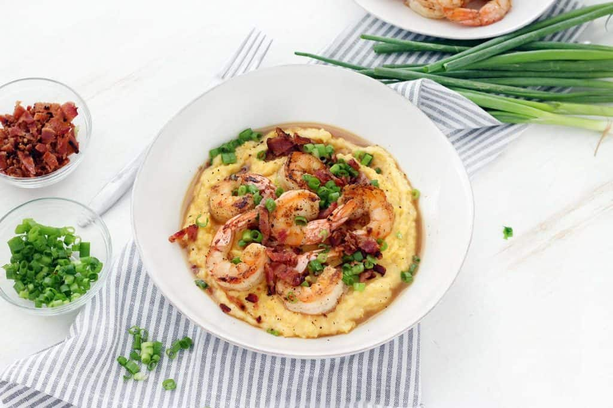

Shrimp and Grits

Description
This southern staple is perfect any time of year and is an easy yet elevated
comfort meal.
Ingredients
- 2 1/2 cups Chicken Stock
- 2 cups Milk (whole or 2%)
- 6 tbsp Salted Butter
- 3/4 cup Stone-Ground Grits
- 1 cup shreeded Sharp Cheddar Cheese
- 6 strips Bacon
- 1 lb. Jumbo Shrimp (peeled, deveined, no tails)
- 1/2 Yellow Onion diced
- 2 tbsp Old Bay Seasoning
- 2 tsp Smoked Paprika
- Salt and Pepper to taste
- thinly sliced Green Onions for garnish
Steps
- Bring 2 cups of the chicken stock, the milk, 3 tbsp of the butter,
and a pinch of salt to a gentle boil in a medium sized pot. Add the
grits and whisk together. Simmer for 10-15 minutes, or until grits
are soft and creamy, whisking every few minutes. Cover and set aside
off heat. They will finish softening up while they sit.
-
Cook the 6 bacon strips until crispy in a nonstick or cast iron skillet.
Set aside on a paper towel lined plate. Once cool, chop into small pieces.
- Drain all but 2 tbsp of the bacon grease from the skillet.
- Rinse the shrimp with cold water and pat dry. Season with old bay, salt
and pepper. Cook shrimp and onion in the bacon grease until only just
cooked (about 2 minutes per side).
- Add 1 1/2 tbsp of butter and 1/2 cup of chicken stock to the shrimp.
Season liberally with remaining old bay (add more to taste). Stir until
butter is melted and broth is heated.
- Stir in the cheese to the grits until melted.
- Serve the shrimp mixture over the grits, making sure to spoon some of
the liquid from the skillet over the grits, and sprinkle with the bacon
pieces and sliced green onion, if using. Serve immediately.